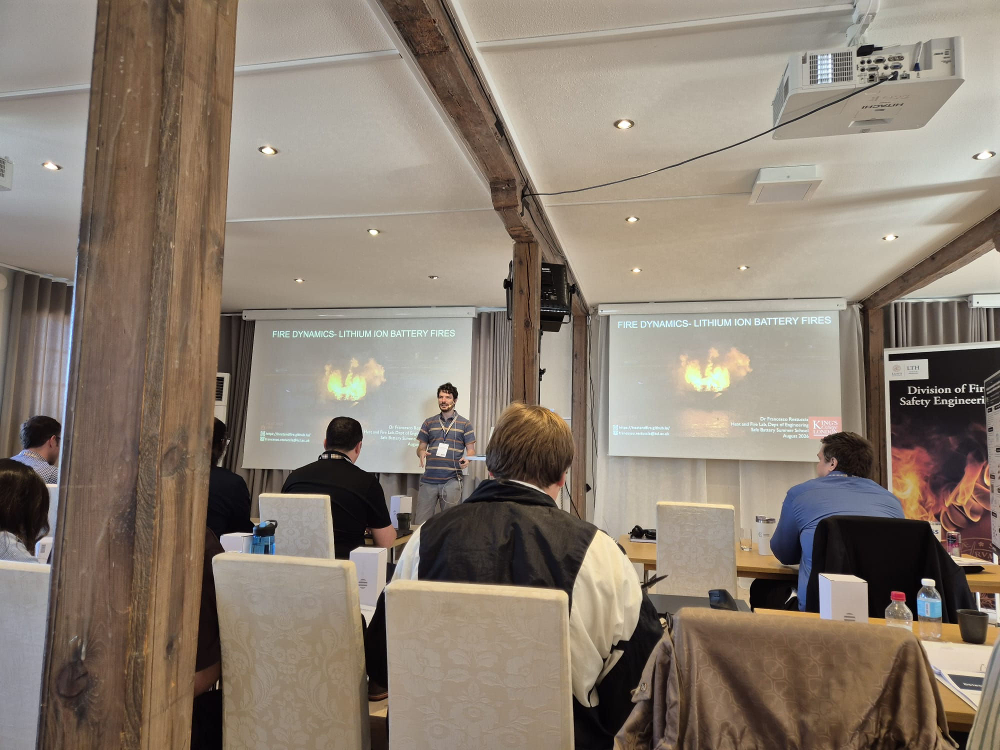
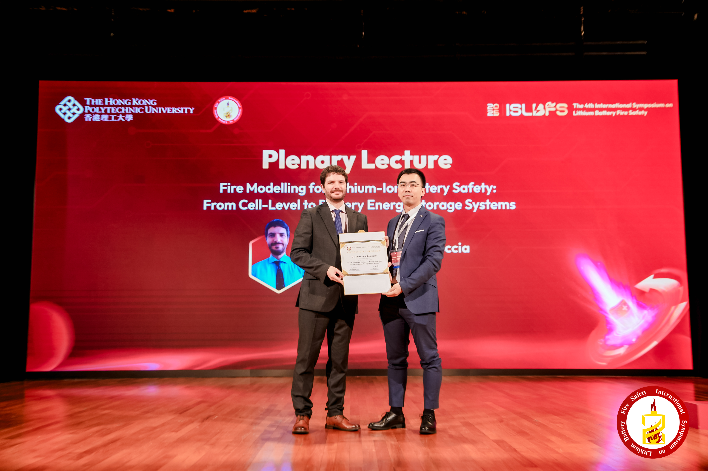
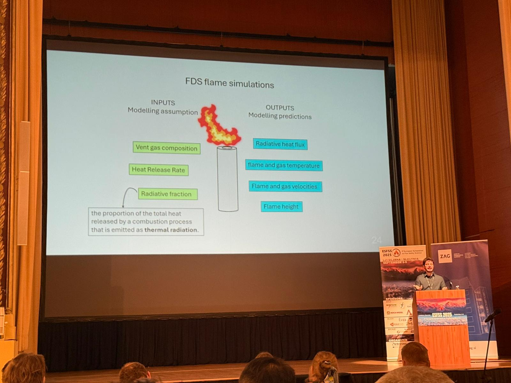
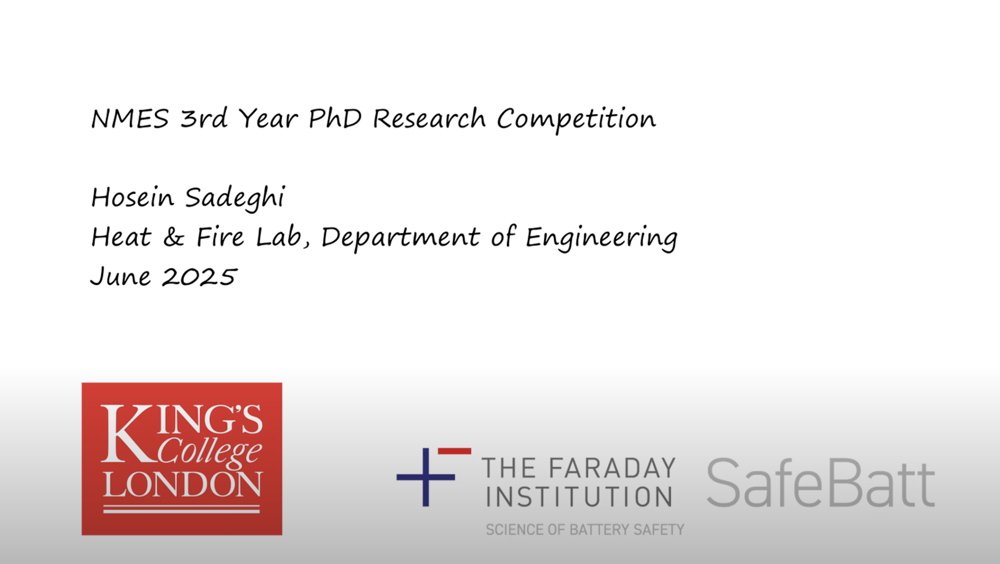
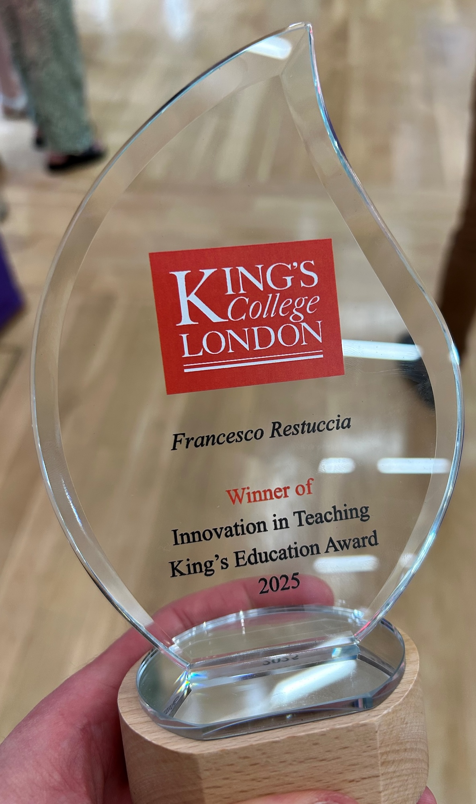
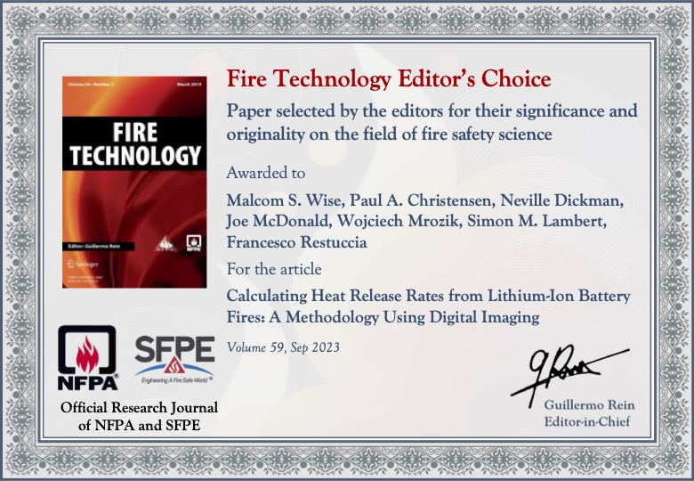
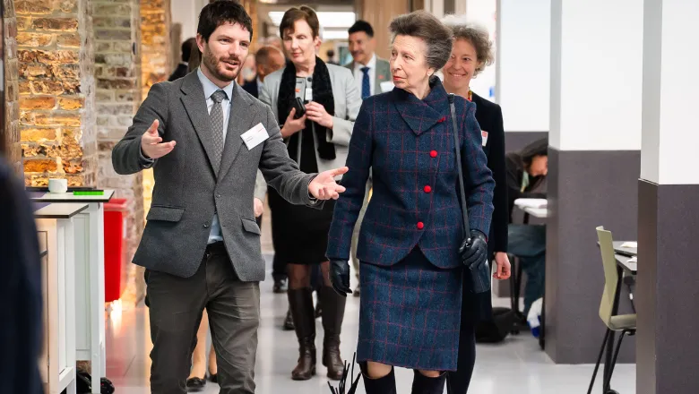
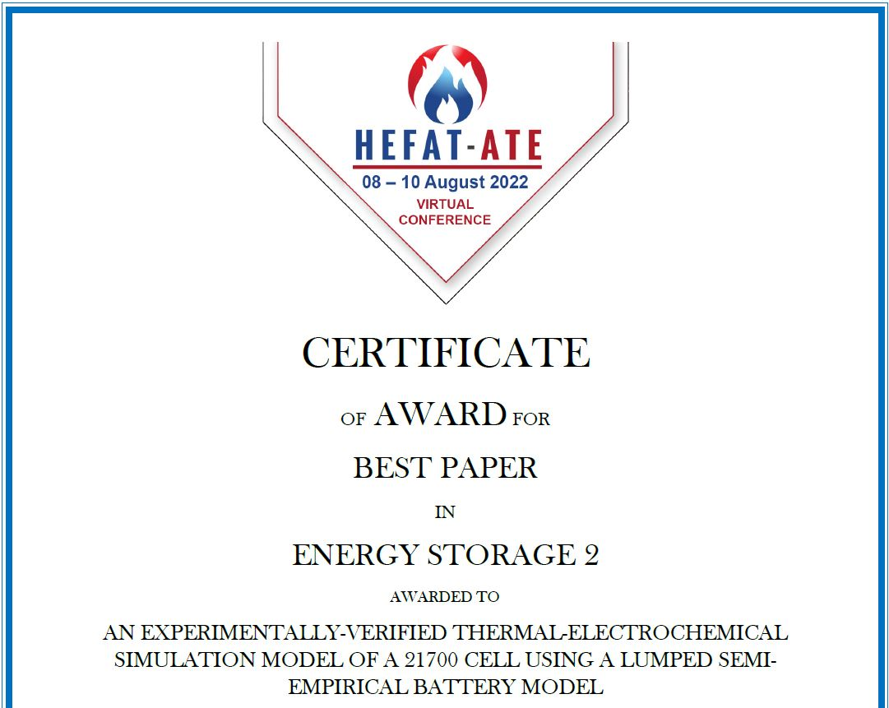

Latest Updates
News

Carolina, Elena, and Francesco participated in the first PHD summer school on safe batteries with 50 researchers from all over the world, organised by Lund University and sponsored by the combustion institue and IAFSS. Francesco taught part of the course, focusing on fire dynamics. The location in Sweden was magnificent, it was a great event and we hope it occurs again in following years
Carolina and Francesco participate in the kick-off meeting for the new round of the Safebatt project 2026–2030. Excited for four more years of battery safety research!
We welcome Domenico Enicchiaro, visiting PhD student from Prof Di Benedetto's group at Università degli Studi di Napoli Federico II, joining us for 6 months.

Congratulations to Francesco for giving a plenary keynote on battery fire research at ISLBFS2025 in Hong Kong.

Congratulations to Hosein for being recognised with a Best Paper award at ISLBFS2025 in Hong Kong!

Congratulations to Francesco for giving a keynote on battery fire research at ESFSS2025.
Group Lead Francesco Restuccia has been promoted to Reader in Engineering. Congratulations!

Well done Hosein for participating in the 3-minute thesis competition — a great video explaining your research!

Massive congratulations to Francesco for winning the college-wide Education Award for Innovation in Teaching!

Francesco and the Newcastle University team receive the Editors' Choice Best Papers of 2023 in Fire Technology for "Calculating Heat Release Rates from Lithium-Ion Battery Fires: A Methodology Using Digital Imaging".

We had the honour to speak about our fire science research and KCL engineering education labs with HRH Princess Royal at the official opening of the quad.
Francesco joins the Fire Science Show Podcast, interviewed about wildfire spread modelling and his recent ERC grant.
Francesco gave an invited talk on wildfires at the Hong Kong Polytechnic University. Watch on YouTube.
Delighted to share that FIREMOD has been funded by an ERC Starting Grant — five years of engineering research on wildfire modelling to improve predictions of when and why wildfires spread.
We've enjoyed having Anton Pustygin from Imperial in our group this summer as part of a Faraday Institution Summer Research Experience placement.
We welcome Elena Funk, joining as a PhD student focused on the development of a methodology for the definition of battery fire scenarios.
We welcome Abdullah Rehman, joining as a PhD student focused on the impact of wildfires in the wildland-urban interface as part of the Leverhulme Centre for Wildfires.
Francesco contributed to a UK Parliament POST research briefing on the wildfire risk to the UK landscape.
Hosein Sadeghi talks about his PhD journey in Engineering at KCL Heat and Fire Lab as part of a KCL PhD informational video.
Francesco presented on battery safety at the Green Fire Safety Conference (May 2023) — the talk is now available on YouTube.
Francesco joins the Fire Science Show Podcast, interviewed about battery safety research.
New paper from the group led by Francesco in collaboration with Newcastle University, on digital imaging for heat release rate measurements in LIB fires.
Group Lead Francesco Restuccia has been promoted to Senior Lecturer (Associate Professor UK). Congratulations!
New paper led by Alireza Sarmadian, part of the EPSRC Prosperity Partnership with JLR, on simulations of a cylindrical battery using physics-based, simplified and generalised lumped models.
We welcome Ally Mamgain, joining as a part-time PhD student focused on the impact of battery fires in subterranean environments!
We welcome Zilong Wang, visiting PhD student from Prof Huang's Fire Lab at Hong Kong Polytechnic University, joining us for 6 months.
The Heat and Fire Lab joins the Faraday Institution Major Project SAFEBATT, with a new project focusing on modelling thermal runaway and fire propagation in lithium-ion batteries.
Francesco presented at the European Federation of Chemical Engineering on electrostatic safety, funded by NFPA Research Foundation and led by Ioana Sandu.

The Heat and Fire Lab wins its first best paper award! Dr Alireza Sarmadian's paper on thermal-electrochemical simulation of a 21700 cell wins best paper in energy storage at HEFAT-ATE 2022.
Hosein Sadeghi joined our lab as a PhD student, with research focusing on lithium-ion battery fires.
Francesco joins the Fire Science Show Podcast to talk about battery fires and safety research around batteries.
On the week of COP26, KCL included our group's research in the work the university is doing to address the COP26 goals.
Dr Alireza Sarmadian joined as a Postdoctoral Research Associate, funded on an EPSRC Prosperity Partnership Project with Jaguar Land Rover, studying the thermophysical behaviour of a lithium-ion battery cell.
Imogen Richards joined our lab as a PhD student, with research focused on fire spread modelling in wildfires.
The Leverhulme Centre for Wildfires posts a blog entry on our group's work in wildfires.
The Leverhulme Centre for Wildfires posts a blog entry on our group's paper, "Spontaneous ignition of smouldering peat fires (and how to simulate them in the field)".
Francesco has been awarded the 2020 Jack Watts Award for Outstanding Reviewer by Fire Technology, for outstanding quality, depth, number, and timeliness of reviews.
Research spotlight article from KCL introducing Francesco and two more new academics in the Department of Engineering.